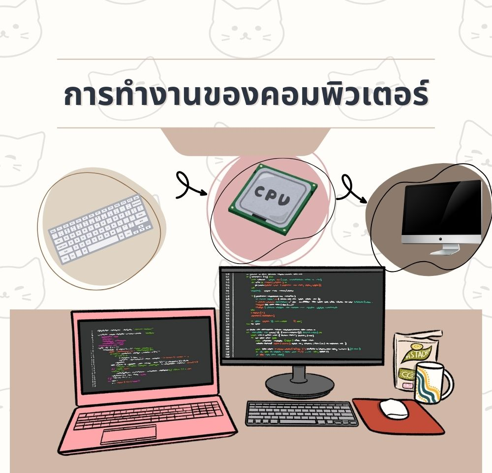

หน่วยที่ 2: การทำงานของคอมพิวเตอร์
การทำงานของคอมพิวเตอร์

องค์ประกอบหลักของคอมพิวเตอร์
1
หน่วยรับข้อมูล (Input)
เช่น คีย์บอร์ด, เมาส์, ไมโครโฟน, สแกนเนอร์
2
หน่วยประมวลผลกลาง (CPU)
ทำหน้าที่ประมวลผลคำสั่งและข้อมูล
3
หน่วยความจำ (Memory)
เก็บข้อมูลและคำสั่งขณะทำงาน
4
หน่วยแสดงผล (Output)
เช่น จอภาพ, ลำโพง, เครื่องพิมพ์
ฮาร์ดแวร์
- ส่วนประกอบทางกายภาพของคอมพิวเตอร์
- สามารถจับต้องได้
- ตัวอย่าง: จอภาพ, คีย์บอร์ด, เมาส์
ซอฟต์แวร์
- โปรแกรมที่สั่งการคอมพิวเตอร์
- ไม่สามารถจับต้องได้
- ตัวอย่าง: Windows, Word, Chrome